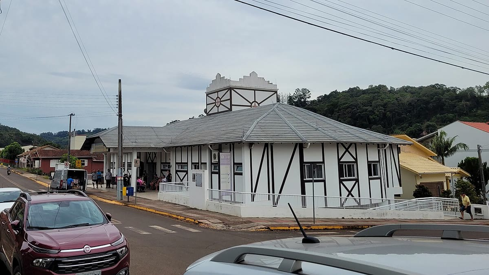

Saúde · 28 de outubro
Mutirão de vacinação atende 12 mil pessoas em três dias
Postos extras funcionaram até as 22h; cobertura de idosos subiu 18 pontos, mas bairros rurais seguem abaixo da meta.

O mutirão de vacinação realizado entre sexta-feira (23) e domingo (25) aplicou 12.400 doses em Vale Verde, segundo a Secretaria Municipal de Saúde. Cinco postos funcionaram até as 22h, e dois ginásios abriram no fim de semana para atender famílias que não conseguem ir às unidades durante a semana.
A ação priorizou idosos, crianças menores de 5 anos e pessoas com doenças crônicas. A cobertura entre maiores de 60 anos subiu 18 pontos percentuais em relação ao início do mês. Ainda assim, três bairros rurais ficaram abaixo da meta de 90%: Serra Alta, Campo Belo e Rio Claro.
Transporte e informação
Para chegar às áreas rurais, a secretaria usou duas unidades móveis e uma van adaptada. A equipe também visitou 14 comunidades e fez busca ativa de pessoas que não compareceram. “A distância é uma barreira, mas a desinformação é maior. Muita gente ainda acredita que a vacina causa a doença”, disse a coordenadora de imunização, Vera Lúcia Antunes.
A prefeitura vai manter um plantão de vacinação nas unidades de saúde e pretende repetir o mutirão em março, antes do período de chuvas. A meta é elevar a cobertura geral de 78% para 90% até o fim do ano.
“Vacina não é só campanha. É rotina, é confiança e é alguém que explica com paciência.”
Vera Lúcia Antunes, coordenadora de imunização
Próximas etapas
O município também vai ampliar a vacinação nas escolas, com equipes volantes em 42 unidades. A ação começa em novembro e inclui atualização da caderneta de crianças e adolescentes. Pais ou responsáveis devem levar o documento e o cartão de vacinação.
Especialistas lembram que a cobertura alta protege quem não pode se vacinar, como bebês e pessoas imunossuprimidas. “A meta não é só um número. É a diferença entre um surto e um caso isolado”, afirmou o infectologista Pedro Sampaio.
Quem perdeu o mutirão pode procurar a unidade de saúde mais próxima, de segunda a sexta, das 8h às 17h. O calendário completo está no site da prefeitura e no aplicativo Saúde Vale Verde.